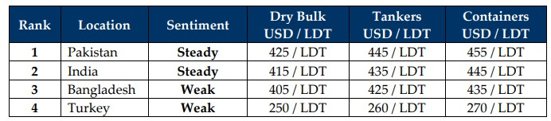

GMS Week 35 – SNORING SEPTEMBER?
in Weekly Demolition Reports 01/09/2025

As August winds down, global markets gave us another week of shy half-gestures and newlywed hesitant moves, all while confidently pretending they were marching somewhere important. Oil traders kept one eye on inventories, the other on geopolitics, and both cockeyed on the clock as WTI closed at USD 64/barrel with Brent just above USD 68—moves so small they looked like rounding errors. Yet the steady draw of about 3 million barrels from U.S. reserves keeps feeding the illusion of momentum heading into September as U.S. oil prices continue to fall, exceeding expectations. The Baltic Dry Index also added its own stage drama, closing at 2,025, the best in a month, but the split beneath the headline was far more telling: Panamaxes up 3.1%, Supramaxes at highs not seen since May 2024, and lumbering Capesizes stumbled on their own wakes thanks to weak iron ore demand. The smaller, nimbler classes seem to be carrying the mood all while the giants’ sulk – a sulk that has been slowly charting their return to the recycling beaches of late, week after week.
Tonnage supply this week has however slowed, with fewer arrivals across the Indian sub-continent ship recycling waterfronts that left Bangladesh and Pakistan feeling quieter than recent ledgers suggest, while only a couple of tankers and a tiny supply vessel shuffled onto Alang’s sands. Not exactly the flood of post-Covid overaged ships the market had driven its expectations into believing would be happen through the summer of 2025 – much to the industry’s dismay. Currencies also added their own spicy theatre to the markets this week with India’s Rupee collapsing to record lows, leaving steel price gains looking more like inflation cosplay than real optimism. Pakistan’s plate values froze again, and Bangladesh’s market looked so bored out of its untraded mind it barely twitched, all while currencies at both destinations remained astray.
Inflation levels only added to the ongoing facade as it is looking less like a synchronized dance and more like a badly rehearsed opera of monkeys. In the U.S., levels stayed steady around 2.7–2.8%, as the Feds keep U.S. interest rates on hold. India played the opposite card, skirting stagflation territory after July’s dramatic dip. Bangladesh laced up its sticky mountain shoes and started climbing Mt. Inflation again at 8.5%. Pakistan bounced absurdly from April’s 0.3% (the lowest since the 1960s) to 3.5% in May, like inflation had forgotten to show up and then arrived late to the party. China whispered at 0.5%, barely audible, while Turkey, though far better than a year ago, is still screaming at 32.6%, fiscal drama queen hogging center stage while driving Turkish recyclers into oblivion.
Activity overall has slowed under the thick fog of compliance and delivery hurdles ever since the Hong Kong Convention entered into force back in June, chipping away and reducing prospective buyers to a trickle. The few units that do surface often end up in geographically inconvenient waters and fresh out of options, ending up in competing hands. As such, as oil sighs, the Baltic Dry Index flatters itself, Capes sulk, India’s Rupee collapses even as steel ticks upward, and only a handful of vessels actually reached the beaches. Pakistan waits, Bangladesh snores, India hedges, and Turkey? Fun, always.
For Week 35 of 2025, GMS Market Rankings / vessel indications are as below.

📄 Download PDF: Ship-recycling-market-insight-Week-35-08-29-2025-Snoring_September.pdfSource: GMS,Inc. https://www.gmsinc.net/gms_new/index.php/web
 Translate
Translate{kind=link}